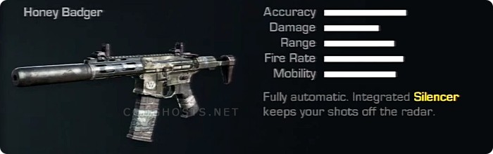

Honey Badger
Due to the Honey Badger having an integrated silencer it cannot mount other barrel attachments, such as Muzzle Brake for example. However, this means that more attachments can be used in total because the silencer is in essence a "free" attachment; at most three others can be equipped with the use of Attachments for, in effect, a total of four. It has the third best silenced range of any assault rifle in Ghosts, beat out only by the AK-12 and the Remington R5, and also has the best silenced time to kill due to its high range and rate of fire.
http://callofduty.wikia.com/wiki/Honey_Badger_(weapon)